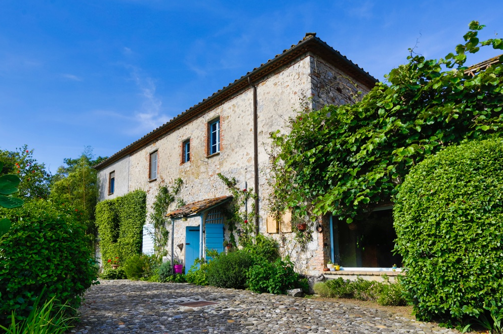
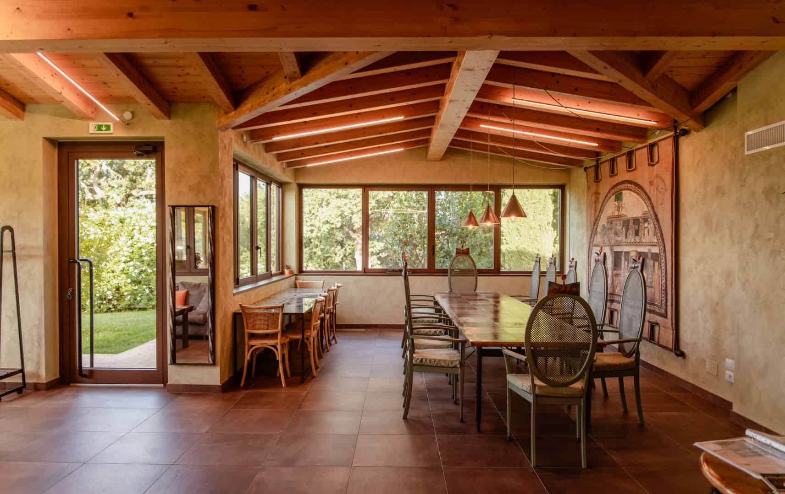
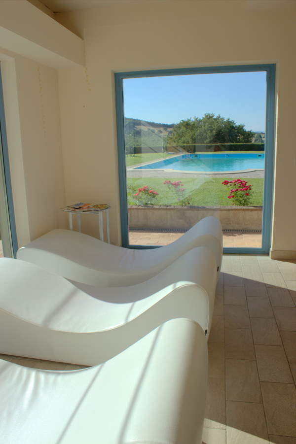
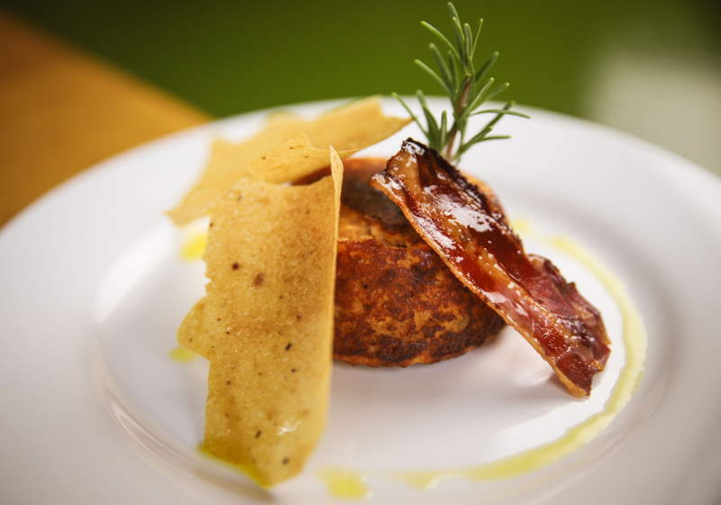
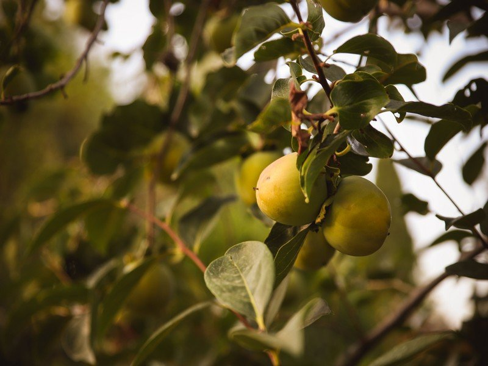
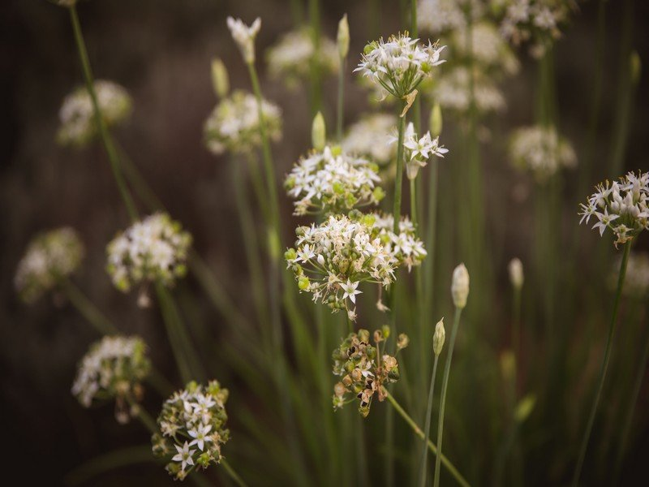

★★★★★
"Un angolo di paradiso nella Maremma. Camere curatissime, colazione incredibile con prodotti propri, e la posizione perfetta per visitare Pitigliano e le terme. Ci torneremo!"
Roma · Booking.com ✓

Un angolo di Paradiso tra le colline della Maremma,
a due passi dalle Terme di Saturnia

Il Poggio di Teo è un agriturismo biologico immerso nella natura selvaggia della Maremma Toscana. Il nostro casale storico, circondato da boschi incontaminati, ulivi centenari e un piccolo lago naturale abitato da pesci e tartarughe, offre un'esperienza unica dove il tempo rallenta e la natura parla.
Coltiviamo olivi, grano e farro. Il nostro orto biologico e la serra moderna producono i sapori che portiamo in tavola ogni giorno. Con 700 piante di olivo e la produzione di pasta trafilata al bronzo con grani antichi, portiamo la terra direttamente sulla vostra tavola.
Scopri di piùInizia la giornata con i sapori dell'orto e la vista sulla Maremma. Prodotti freschi dell'azienda agricola, marmellate artigianali e pane fatto in casa.
Pitigliano, Montemerano, Sovana — i borghi più belli d'Italia a pochi chilometri. Vie Cave etrusche scavate nel tufo, storia millenaria a portata di mano.
Rilassati nella nostra piscina salata con un panorama mozzafiato sulla Maremma. Il cielo che si tinge di arancione mentre il sole scende sulle colline.
I sapori della terra, dall'orto al piatto. La nostra cucina tradizionale maremmana celebra i prodotti dell'azienda biologica con ricette autentiche e stagionali.
Sauna finlandese, hammam con aromaterapia, docce emozionali con cromoterapia e jacuzzi. Un rituale di benessere completo per rigenerare corpo e mente.
Il silenzio della campagna toscana ti avvolge. Nessun rumore della città, solo il suono della natura e il cielo stellato della Maremma lontana dall'inquinamento luminoso.

La nostra cucina celebra i sapori della Maremma con prodotti dell'orto biologico e della nostra azienda agricola. Ogni piatto racconta la storia di questa terra: pasta trafilata al bronzo con grani antichi, olio extravergine delle nostre 700 piante di olivo, verdure fresche dell'orto.
Opzioni vegetariane, vegane, senza glutine e senza latticini disponibili su richiesta. Chiuso il lunedì, esclusi festivi e ponti. Prenotazione consigliata.
Scopri il Ristorante
Sauna finlandese, bagno turco con aromaterapia, docce emozionali con cromoterapia, jacuzzi con getti d'acqua e sala relax con angolo tisane. Un rituale di benessere completo per rigenerare corpo e mente nel cuore della Maremma.
A soli 8 km si trovano le Terme di Saturnia con le sue acque sulfuree a 37.5°C e le famose Cascate del Gorello ad accesso libero. Il benessere termale è a portata di mano.
Scopri il Benessere
700 piante di olivo delle varietà Leccino e Frantoiano producono il nostro olio extravergine dal colore verde con fragranza unica. Pasta trafilata al bronzo — Paccheri, Gigli, Tagliatelle, Pici, Spaghetti — con miscela di grani antichi a basso contenuto di glutine.
Farine macinate a pietra, farro perlato, olio essenziale di lavanda, marmellate e conserve artigianali. Disponibili per la vendita diretta in struttura.
Scopri i Prodotti"Un angolo di paradiso nella Maremma. Camere curatissime, colazione incredibile con prodotti propri, e la posizione perfetta per visitare Pitigliano e le terme. Ci torneremo!"
"L'appartamento Cedro è un sogno — il letto a baldacchino, il camino, i soffitti a volta. E la cena nel ristorante è stata la migliore della vacanza. Servizio impeccabile."
"Struttura eccezionale, personale gentilissimo. La spa è piccola ma perfetta, e le Cascate del Gorello a 8 minuti sono uno spettacolo. Consigliato a tutti gli amanti della natura."
"Abbiamo portato anche il cane e si sono dimostrati super accoglienti. La piscina con vista è da sogno. I prodotti dell'azienda squisiti — abbiamo portato a casa olio e pasta."

4 piscine termali esterne, acque sulfuree a 37.5°C. Le Cascate del Gorello sono ad accesso libero e gratuito.

La piccola Gerusalemme, borgo costruito su un blocco di tufo. Vie Cave etrusche e patrimonio ebraico unico.

Uno dei borghi più belli d'Italia, con centro storico a forma di cuore e la Chiesa di San Giorgio.

Porto Ercole, Porto Santo Stefano, Orbetello. Spiagge della Feniglia e riserva WWF di Orbetello.